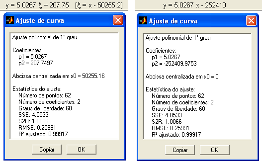
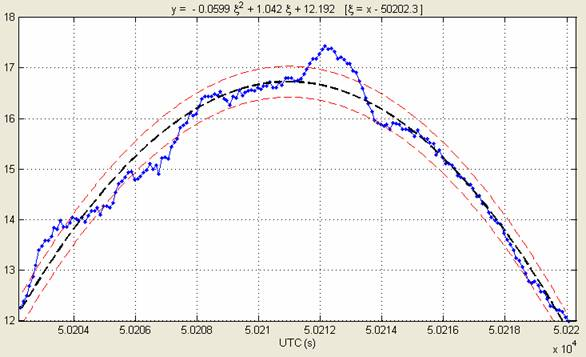
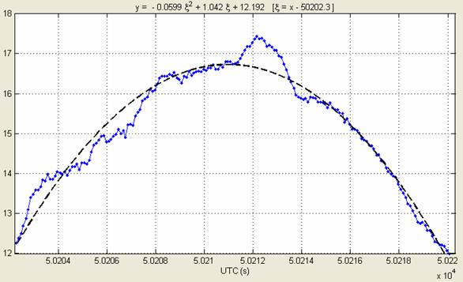

| Menu Opções |
  |
Opções
dos Ajustes de Curva
O R_DAT permite
que o usuário altere algumas opções dos
ajustes de curva conforme a necessidade.
As seguintes
opções podem ser selecionadas:
Por default, o
R_DAT sempre inicia com essas opções não selecionadas.
Não
Aplicar Correção de Origem
Durante a
utilização da função “ajuste de curva”, para
evitar erros numéricos quando a abscissa apresenta valores muito
grandes (como
hora do dia em segundos), a abscissa sofre um offset de forma que o
intervalo
de interesse inicie em zero.
Ao selecionar a
opção “Não aplicar correção de origem” no menu
“Opções”, essa correção não será realizada. Nesse caso,
a variável independente será o próprio x,
e não ξ
= x – x0.
A seguir é
apresentado um exemplo com e sem correção de
origem:
Com correção Sem correção

Não
Exibir Limiares de Erro
Ao selecionar a
opção “Não exibir limiares de erro” no menu
“Opções”, os limiares não serão apresentados.
A seguir é apresentado um exemplo com e sem limiares de erro:
Com limiares de
erro

Sem limiares de
erro

| |
Lembrar parâmetros de exibição múltipla | Remover prefixos ao carregar arquivo |
|